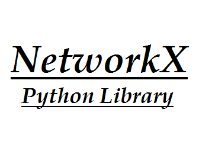

JQUERY
JQuery is a JavaScript function library that interacts with HTML, designed to simplify interpreted scripts in the client-side browser. Launched in December 2006 at the BarCamp in New York by John Resig. Used by about 77% of the 10,000 most visited sites in the world, jQuery is the most popular JavaScript library.
JQuery is an open source library with dual license, making use of the MIT License or the GNU General Public License version 2. The jQuery syntax was developed to make it easier to navigate the HTML document, select DOM elements, create animations , Manipulate events, develop AJAX applications and create plugins on it. Such facilities allow developers to create layers of abstraction for low-level interactions in a simplified way in dynamic web applications of great complexity.
JAVASCRIPT
JavaScript is an interpreted programming language. It was originally implemented as part of web browsers so that scripts could be run on the client side and interact with the user without the need for this script to go through the server, controlling the browser, performing asynchronous communication and changing the contents of the displayed document.
It is currently the main language for client-side programming in web browsers. It also starts being heavily used on the server side through environments such as node.js. It is designed to be a prototype-based object-oriented scripting language, weak and dynamic typing and first-class functions. It supports functional programming and features features such as locks and high order functions commonly unavailable in popular languages such as Java and C ++. It is the most used programming language in the world.
SOCILAB
SOCILAB
Socilab is a free tool provided by Linkedin social network to view and analyze your Linkedin network. Through Socilab if it is possible to build a graph with your Linkedin friends, the vertices are the Linkedin friends, and the edges are the friendly relations between the users of the Linkedin.
Socilab uses a variety of complex network metrics to analyze its graphs. Each measure of the network was designed through sociological research in professional networks, as well as percentage bars comparing their current measurements with those of past users. The tool also uses Javascript to perform calculations, allowing the user's network to be processed locally on the machine itself.
NETWORK X
Network X is a Python language software package for the creation, manipulation, and study of the structure, dynamics, and functions of complex networks.
The Network X provides Python language data structures for graphs, digraphs, and multigraphs, many standard graph algorithms, network structure and analysis measures, generators for classic graphs, random graphs, and synthetic networks, nodes can be "anything" (e.g. text, images, XML records), the edges can hold arbitrary data (e.g. weights, time-series), open source BSD license, more than 1800 unit tests, >90% code coverage and additional benefits from Python: fast prototyping, easy to teach, multi-platform.